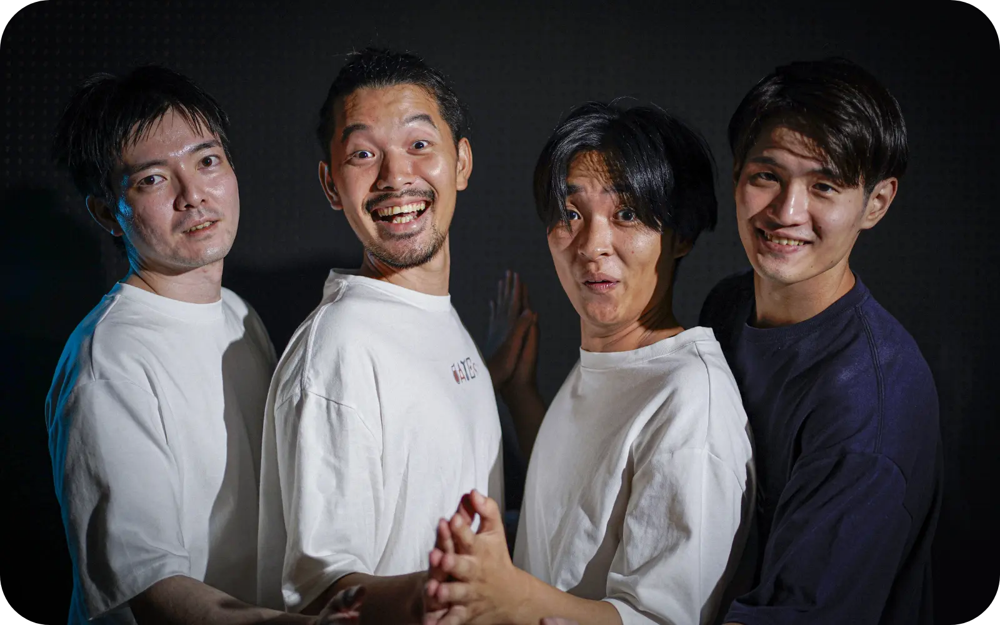

様々なデートプランを調べること、プランについてコメントすること、また自らが投稿することが可能なUCG型プラットフォームサイトとなっております。
エリア、スポット、予算、タイプ（日帰り、泊り、ナイトデート）、さまざまなタグ（「雨の日デート」「家デート」など）から検索することができます。

地図情報やスポットの写真、スポットごとの説明などの基本情報に加え、評価機能を使うことで投稿者また他のレビュワーからデートの極意を聞くことができます。
投稿することで同じデートを体験した方からの評価や、そのエリアに詳しい方から近隣のおすすめスポットを聞けたり、様々な恩恵が得られます。
1995年生まれ。新卒で通信事業社に入社し、M&Aやマーケティングに従事。その傍らで、外資IT企業などでデザイナーとして事業参画。2019年、同僚であった小泉と本プロジェクトを始動、複数回のピボットの末、デートプラン投稿・評価サイト「DATEs」をリリース。
1992年生まれ。通信事業社にオウンドメディアのPdMとして新卒入社。2021年に退職後、人材系会社にてUXデザイナーとしてプロダクトエンハンスを担当。サービス全体設計とフロントエンド開発担当としてDATEsリリースに携わる。
1993年生まれ。Web企業にデータエンジニアとして新卒入社。現在は同企業の研究所にてエンジニアとして、機械学習（画像、言語、コンテキストアウェアコンピューティング）、HCI分野での研究活動や、それを活用した新規サービスの立ち上げ業務を行っている。DATEsの開発全般に携わる。
1996年生まれ。2018年に新卒で通信系販売代理店に入社し、経理を担当。2020年に退職後、出版社にて経理担当として子会社の決算全般を担当。2022年に退職後、外資系ITベンダーにて主に顧客の技術的な相談窓口として活動している。DATEsの広報に携わる。
DATEsのポリシーをご案内いたします。
利用規約 ・
プライバシーポリシー
事業連携、インターン等のお問い合わせは以下までお願いいたします。
